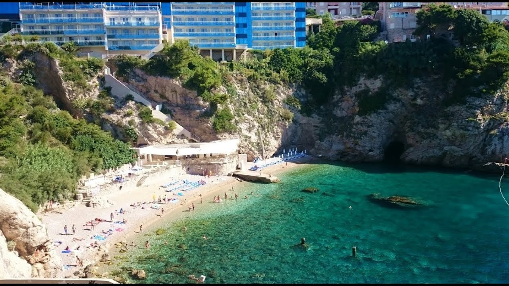

-

The city of Dubrovnik
Old city walls
-

The city of Dubrovnik
Bellvue beach

 Stradun street
Stradun street
Ulica srđ 3, Dubrovnik
Click for location
gradegradegradegradegrade
Svetog Dominika, Dubrovnik
Click for location
gradegradegradegradegrade
Kralja Tomislava 1, Dubrovnik
Click for location
gradegradegradegradegrade
Nikole Tesle 2, Batala, Dubrovnik
Click for location
gradegradegradegrade
Ante Starčevića 24, Batala, Dubrovnik
Click for location
gradegradegradegrade